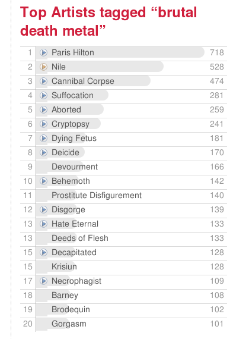

The #1 Brutal Death Metal Artist
Brutal Death Metal is an extreme form of death metal filled death growls (Cookie Monster vocals), gore-filled lyrics and down-tuned, hyper-fast guitars. Brutal Death Metal bands have names like Disgorge, Deeds of Flesh, Devourment, Disavowed, Krisiun, Nile, Skinless, Suffocation, Vile, Wormed, and Cannibal Corpse. This video of Krisiun captures the essence of brutal death metal:
At last.fm, there are hundreds of band that have been tagged with 'brutal death metal'. They tend to have rather grim names like Cryptopsy, Aborted, Dying Fetus, Decapitated. However, there is one artist that has been tagged with 'brutal death metal' more than any other artist. This artist is the king of the brutal death metal hill, being tagged with 'brutal death metal' a hundred times more than the #2 Brutal Death Metal Band. This artist is none other than Paris Hilton. Here are the tags for Brutal Death Metal:

Paris Hilton is keeping strange company, perhaps she's trying to toughen up her image before she heads to prison. (And Barney the Dinosaur is not too shabby at #18 in the list).
We all know that no matter what we may think of Paris Hilton, she is not a Brutal Death Metal artist. What we are seeing here is the result of social tagging vandalism. I can imagine some 14 year old kid getting a laugh tagging Paris Hilton with Brutal Death Metal, knowing that sooner or later someone will be listening to last.fm's Paris Hilton radio and be surprised and shocked to hear Cryptopsy. Of course, this goes the other way too. If you listen to Brutal Death Metal tag radio, you are very likely to hear Paris Hilton (ouch!). (Go ahead, give it a try)
Social tagging vandalism is the Web 2.0 equivalent of writing
graffiti on the bathroom wall - its a way for the meek to lash out while
hiding behind the veil of anonymity. But social tagging vandalism
does have a real impact. Tagging vandalism, if unchecked, can
devalue the entire set of tags. Of course you can expect noise in
your tags, there will always be the off-topic tags such as lazy eye,
but when the errant tags dominate (such as we see here with Paris
Hilton) all of the other tags applied to Paris Hilton mean
less. Sites like last.fm that let you do all sorts of interesting
things with tags (such as listen to tag radio), have to protect their
data otherwise the value of the tags will be lost. Just like
we need to occasionally paint the bathroom walls, tagging sites need to
occasionally clean up their tags.

Posted by Norman on May 24, 2007 at 07:49 AM EDT #
Posted by Paul on May 24, 2007 at 08:13 AM EDT #
Posted by Norman on May 24, 2007 at 10:08 AM EDT #
Posted by Norman on May 24, 2007 at 10:09 AM EDT #
Posted by Web Adventures on May 24, 2007 at 05:20 PM EDT #
Posted by Chris Quenelle on May 28, 2007 at 12:22 AM EDT #